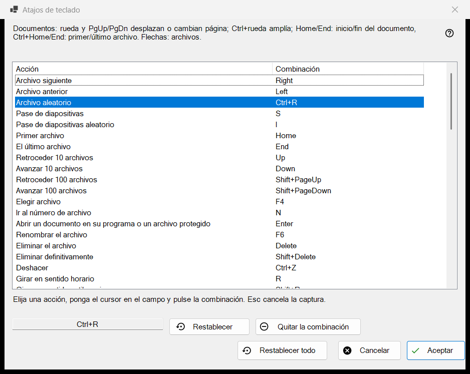
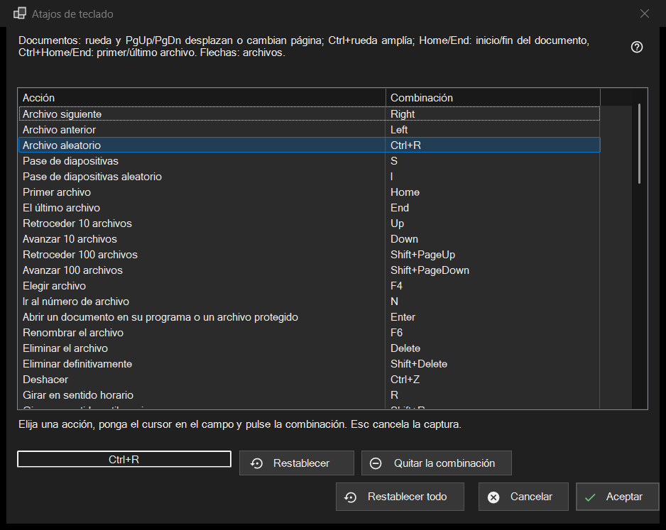

Atajos de teclado
Para qué sirve
La lista de todas las acciones del visor cuya tecla se puede cambiar, con la combinación a la que responden ahora. Se abre desde Configuración, página Archivos y sistema, con el botón Configurar.. de la fila Atajos de teclado. La ventana edita una copia: nada llega a su perfil hasta que pulsa Aceptar.


En este orden
- Abra la Configuración, vaya a Archivos y sistema y pulse Configurar.. en la fila Atajos de teclado.
- Seleccione una acción en la lista.
- Haga clic en el campo situado bajo la lista y pulse la nueva combinación.
- Si otra acción ya la tiene, elija Intercambiar atajos, Quitarlo de esa acción o Cancelar.
- Repita con otras acciones; use Restablecer, Quitar la combinación o Restablecer todo donde haga falta.
- Pulse Aceptar para conservar los cambios o Cancelar para descartarlos todos.
Los elementos
La lista Acción y Combinación
Cada fila es una acción con su combinación principal; una acción sin tecla muestra Sin asignar. Las diez ranuras de carpeta aparecen como Mover a la carpeta 1..0 y Copiar a la carpeta 1..0 (las teclas de dígito mueven, Shift más un dígito de la fila superior copia). Algunas acciones responden además a teclas adicionales de fábrica (Archivo siguiente también reacciona a la barra espaciadora y a PageDown). La lista muestra solo la principal, pero en cuanto da a la acción una combinación nueva, todas sus teclas de fábrica anteriores dejan de funcionar. El texto sobre la lista nombra las teclas fijas de los documentos (rueda, PgUp/PgDn, Home/End, flechas) que no están en la lista.
Grabar una combinación
Seleccione una fila, haga clic en el campo situado bajo la lista (o haga doble clic en la fila) y pulse las teclas, con Ctrl, Shift o Alt si lo desea. El campo graba la combinación completa de una vez, y un modificador solo no es una combinación. Esc sale del campo sin grabar nada. El cambio aparece en la lista de inmediato, pero sigue estando solo en la copia de trabajo.
Teclas que no se pueden asignar
F1, F10, F11, Esc, las teclas de Windows, la tecla Menú, Alt+Tab, Alt+F4 y Ctrl+Alt+Delete pertenecen a Windows o al programa. Al pulsar una aparece: Esta combinación está reservada por el sistema o el programa y no puede asignarse. No cambia nada.
Una combinación que ya está ocupada
La pregunta nombra al propietario: La combinación X ya pertenece a la otra acción. Intercambiar atajos da a esa acción la combinación que tenía la actual (posiblemente ninguna). Quitarlo de esa acción la deja en Sin asignar y le da la combinación a usted. Cancelar no cambia nada.
Restablecer, Quitar la combinación y Restablecer todo
Restablecer devuelve la acción seleccionada a su tecla de fábrica. Quitar la combinación deja la acción sin ninguna tecla, de modo que su tecla de fábrica también deja de funcionar; úselo para desactivar una tecla. Restablecer todo pregunta: ¿Restablecer todas las combinaciones a sus valores predeterminados? Restablecer valores borra todos sus cambios en la ventana; Cancelar los conserva.
Aceptar y Cancelar
Aceptar guarda todo el mapa en el perfil y el visor lo usa de inmediato. Cancelar cierra la ventana y deja el perfil exactamente como estaba. Las teclas de vídeo y audio (pausa, silencio, volumen, búsqueda, velocidad, avance fotograma a fotograma, pistas) actúan sobre el contenido en reproducción.